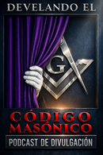

Develando el Código Masónico
Este es un espacio dedicado a comprender la Masonería de forma clara, respetuosa y profunda. Cada semana exploramos símbolos, historia, filosofía y valores.
📚 Lecturas recomendadas
Presentación
Este proyecto busca acercar el pensamiento masónico al público en general sin mitos ni sensacionalismo.
- Episodios semanales de 30 a 45 minutos
- Explicaciones y entrevistas
- Contenido accesible con profundidad
Boletín
Recibe avisos de nuevos episodios, boletines y novedades del podcast.
Sin spam. Puedes darte de baja cuando quieras.
Sobre el autor
Daniel Pazos es el creador de Develando el Código Masónico, un proyecto que nace del deseo de abrir un espacio de reflexión, diálogo y comprensión sobre la Masonería en el mundo contemporáneo.
A lo largo de su recorrido dentro de la Orden, ha observado que muchas veces la Masonería es interpretada desde el misterio, la desinformación o el sensacionalismo. Este podcast surge precisamente como una respuesta a esa situación.
Cada episodio intenta tender un puente entre el mundo simbólico de la Masonería y los desafíos del presente.
Si este contenido te resulta valioso, tu apoyo ayuda a mantener y mejorar este proyecto independiente.

Apoya a este proyecto
Si este contenido ha sido de valor para ti, tu apoyo ayuda a seguir fortaleciendo la producción, la investigación y la participación de invitados. Si deseas apoyarme, puedes hacerlo mediante las siguientes plataformas.
¿En qué se usa tu apoyo?
- Mejoras de audio, música y edición.
- Investigación y bibliografía.
- Invitados, logística y herramientas.
Proponer tema o contactar
Puedes enviar sugerencias de temas, preguntas o comentarios.
Ir al formularioNormas de la comunidad
Comunicación respetuosa. No se permite publicar datos personales ni comentarios agraviantes.